GEO対策会社おすすめ10選｜中小企業・低予算・SEO会社併用で選ぶなら？

GEO対策会社を探している方の多くは、「中小企業でも依頼できるのか」「低予算で始められるのか」「今のSEO会社に相談したままでよいのか」と悩んでいるはずです。
GEOとは、生成AIやAI検索の回答内で自社の情報が引用・参照されやすい状態をつくる施策です。いきなり大規模なコンサルを依頼するより、まずはAIでの表示状況、狙う質問、既存記事の改善余地を確認することが重要です。
この記事では、GEO対策会社のおすすめ10社を中小企業向け、低予算、SEO会社との併用可否の視点で比較します。基本から確認したい方は、LLMO対策とは？SEOとの違いと実践方法やAIO対策会社おすすめ11選も参考にしてください。
目次

GEO対策会社おすすめ10選の比較表
まずは、GEO対策を依頼できる会社を一覧で比較します。各社によって、得意領域は大きく異なります。低コストで記事制作から始めやすい会社もあれば、データ分析や大規模サイト改善、広告・ブランディングまで含めて支援する会社もあります。
自社に合う会社を選ぶには、料金だけでなく「診断に強いのか」「記事制作まで対応できるのか」「SEOやWeb制作も含めて見られるのか」「大手向けか中小企業向けか」を比較することが大切です。
| 会社名 | 特徴 | 主な対応範囲 | 費用目安 | 向いている企業 |
|---|---|---|---|---|
| 株式会社AIMA | 月額5万円でGEO/LLMO対策を始めやすい | 質問設計、記事制作、引用チェック | 月額5万円（税別） | 小さく始めたい中小企業 |
| 株式会社CINC | 生成AIごとの回答内容や引用状況の分析に強い | 診断、分析、戦略設計、効果検証 | 要問い合わせ | データ分析重視の企業 |
| 株式会社Faber Company | SEO・LPO・CROの知見を活かしたGEO支援 | 可視化、分析、改善提案 | 要問い合わせ | 既存SEO資産を活かしたい企業 |
| 株式会社LANY | SEOとLLMOを組み合わせた検索戦略に強い | 診断、戦略設計、記事制作、改善 | 要問い合わせ | SEOも含めて強化したい企業 |
| 株式会社デジタルアイデンティティ | LLMO/AIO/AI Overviews対策に対応 | 診断、構造改善、リライト、SEO | 要問い合わせ | SEO会社にまとめて相談したい企業 |
| 株式会社ジオコード | SEO・AIO・LLMOを一体で支援 | SEO、Web制作、記事制作、AI最適化 | 要問い合わせ | Webサイト全体を改善したい企業 |
| 株式会社メディアリーチ | SEOとLLMOを統合した長期支援に強い | 戦略設計、コンテンツ改善、PR、モニタリング | 月額30万円〜 | 本格運用したい企業 |
| Queue株式会社（umoren.ai） | AI検索最適化に特化したサービスを展開 | 戦略設計、コンテンツ制作、AI検索分析 | 要問い合わせ | AI検索での露出を重視する企業 |
| 株式会社GIG（コンマルク） | Web制作・コンテンツ・AI検索対策を一体で支援 | 設計、制作、開発、運用 | 要問い合わせ | サイト改善まで任せたい企業 |
| 株式会社電通デジタル | 大手企業向けのGEO/LLMO支援に対応 | 可視化、戦略立案、最適化 | 要問い合わせ | ブランド・広告も含めて相談したい企業 |
GEO対策会社おすすめ10選
ここからは、GEO対策に対応している会社を1社ずつ解説します。会社ごとに支援範囲や向いている企業が異なるため、「有名だから選ぶ」のではなく、自社の目的に合うかを基準に比較してください。
初めてGEO対策に取り組むなら、まずは低コストで質問設計と記事制作を進められる会社が向いています。一方で、大規模サイトや複数ブランドを運用している企業は、診断・戦略設計・サイト改善・外部施策まで対応できる会社のほうが適しています。
1. 株式会社AIMA

株式会社AIMAは、大阪を拠点にLLMO対策・AI対策を提供している会社です。月額5万円で、質問設計、記事制作、引用チェックに絞ったLLMO支援を行っており、GEO対策を小さく始めたい中小企業に向いています。
大きなレポート作成や定例会議にコストをかけるよりも、AIに引用される記事やページを増やしたい企業と相性がよい会社です。対応範囲を絞っているため、初期費用を抑えながら、まずはChatGPTやGeminiなどで自社名が出る状態を目指せます。
特に、士業、BtoBサービス、地域ビジネス、Web集客にこれから力を入れたい中小企業に向いています。GEO対策に大きな予算をかける前に、質問設計とコンテンツ制作から始めたい場合は検討しやすい候補です。
参考：株式会社AIMA｜大阪発！月額5万円でできる格安LLMO
2. 株式会社CINC
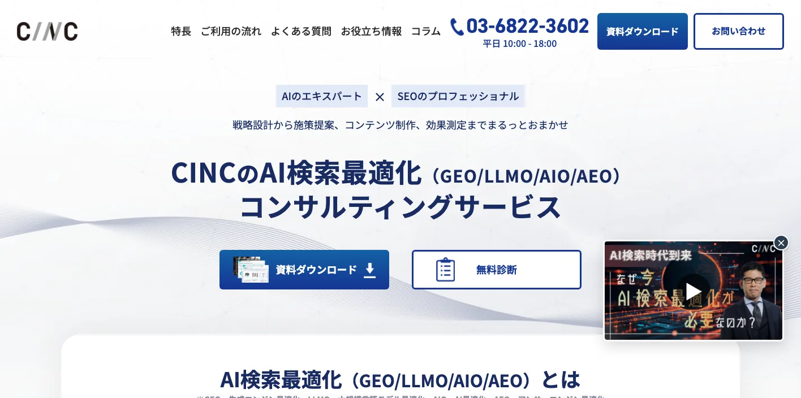
株式会社CINCは、AI検索最適化（GEO/LLMO/AIO/AEO）コンサルティングサービスを提供している会社です。主要生成AIモデルの回答内容やURLの参照状況を取得・解析し、戦略策定から効果検証まで支援します。
ChatGPT、Gemini、Perplexity、Google AI Overviewsなど、AIごとの表示状況を横断的に見たい企業に向いています。自社と競合がどの質問で表示されているのか、どのURLが引用されているのかを把握したうえで施策を進められる点が特徴です。
SEOやWebマーケティング支援の実績もあり、単なる記事制作ではなく、データに基づいてGEO対策を進めたい企業と相性がよい会社です。特に、複数サービスを持つ企業や、競合との表示差分を定量的に見たい企業に向いています。
参考：CINC｜AI検索最適化（GEO/LLMO/AIO/AEO）コンサルティングサービス
3. 株式会社Faber Company
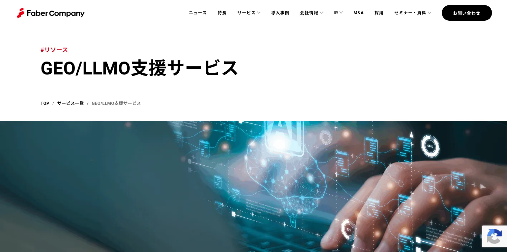
株式会社Faber Companyは、GEO/LLMO支援サービスを提供している会社です。生成AIとLLMによる検索環境で、ブランドがどのように見られているかを可視化し、露出最大化まで支援します。
同社はSEO、LPO、CROの領域で支援実績を持っており、既存の検索流入やオウンドメディアを活かしながらGEO対策を進めたい企業に向いています。AI検索だけを単独で考えるのではなく、既存サイトの改善やコンテンツ構造の見直しとあわせて進めやすい点が特徴です。
すでにSEO記事やサービスページを多く持っている企業は、既存コンテンツをGEO視点で再設計することで、AIに引用されやすい情報資産へ転換しやすくなります。検索流入の土台がある企業ほど、Faber CompanyのようにSEOとGEOをつなげて見られる会社と相性がよいでしょう。
参考：Faber Company｜GEO/LLMO支援サービス
4. 株式会社LANY
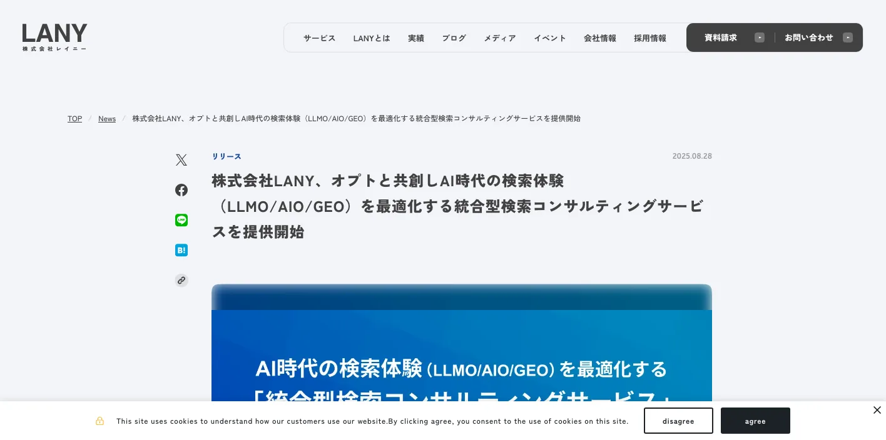
株式会社LANYは、SEOの知見を土台に、LLMO/AIO/GEOの最適化支援を行っている会社です。SEOとAI検索を別々に考えるのではなく、検索体験の変化に合わせた統合型のコンサルティングを提供しています。
既存SEOの改善、コンテンツ制作、サイト構造の見直し、AIに正しく認識されるための情報設計などをまとめて相談したい企業に向いています。特に、オウンドメディアやデータベース型サイト、BtoBサイトなど、SEO資産をすでに持っている企業と相性がよい会社です。
GEO対策は、検索順位だけで評価できる施策ではありません。そのため、既存のSEO指標とAI回答内での言及・引用をあわせて見る必要があります。LANYはSEO領域での知見を活かしながら、AI検索時代の検索戦略を組み立てたい企業に向いています。
参考：LANY｜オプトと共創しAI時代の検索体験（LLMO/AIO/GEO）を最適化するコンサルティングサービスを提供開始
5. 株式会社デジタルアイデンティティ
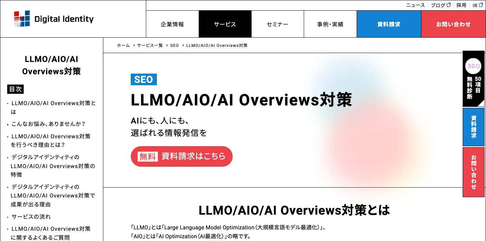
株式会社デジタルアイデンティティは、LLMO/AIO/AI Overviews対策サービスを提供している会社です。生成AIやGoogleのAI Overviewsに対して、Webサイトが正しく認識され、引用・参照されやすい状態を目指します。
対応範囲は、AIによる影響の可視化、全体戦略の策定、サイト構造の最適化、AIに適したコンテンツ設計・リライトなどです。従来のSEO対策を続けながら、AI検索に向けた改善も進めたい企業に向いています。
SEO会社としての経験を重視したい企業や、Google検索・AI Overviews・生成AIをまとめて見たい企業にとって、検討しやすい候補です。既存サイトの改善余地が大きい場合や、記事リライトまで含めて依頼したい場合にも向いています。
参考：デジタルアイデンティティ｜LLMO/AIO/AI Overviews対策
6. 株式会社ジオコード
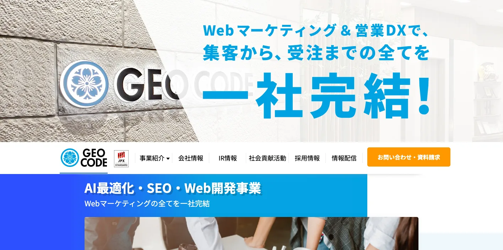
株式会社ジオコードは、SEO対策、Web制作、AIO・LLMOなどのAI最適化を支援している会社です。長年のSEO支援で培った知見をもとに、AI時代の情報探索に対応する施策を展開しています。
Webサイトの構造、記事コンテンツ、UI設計、SEOコーディングなど、サイト全体の改善とあわせてGEO対策を進めたい企業に向いています。AIに引用されるためには、ページ単体の記事だけでなく、サイト全体の情報整理や内部リンク、サービスページのわかりやすさも重要です。
ジオコードは、SEOとWeb制作を含めて相談しやすい会社です。既存サイトが古い、サービスページがわかりにくい、SEO記事の設計から見直したいといった企業に向いています。
参考：ジオコード｜SEO対策・AIO・LLMOなどAI最適化も徹底支援
7. 株式会社メディアリーチ
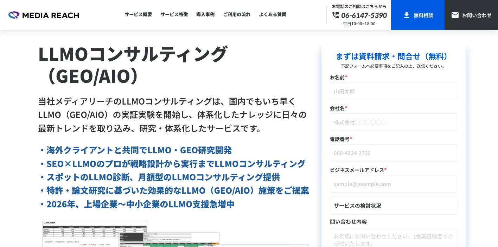
株式会社メディアリーチは、LLMOコンサルティング（GEO/AIO）を提供している会社です。SEOとLLMOを統合した生成AI時代の検索戦略を、長期的に設計・実行する支援を行っています。
主な対応範囲は、LLMO戦略設計、コンテンツ改善、ナレッジベース構築、E-E-A-T強化、PR支援、モニタリング、改善です。料金は月額30万円からで、6ヶ月以上の継続支援を前提とした本格運用向けのサービスです。
単発の記事制作ではなく、AI検索での露出を継続的に改善したい企業に向いています。特に、BtoB企業、SaaS、専門サービス、オウンドメディアを運用している企業など、検索経由の問い合わせ獲得を中長期で伸ばしたい会社と相性がよいでしょう。
参考：メディアリーチ｜LLMOコンサルティング（GEO/AIO）
8. Queue株式会社（umoren.ai）
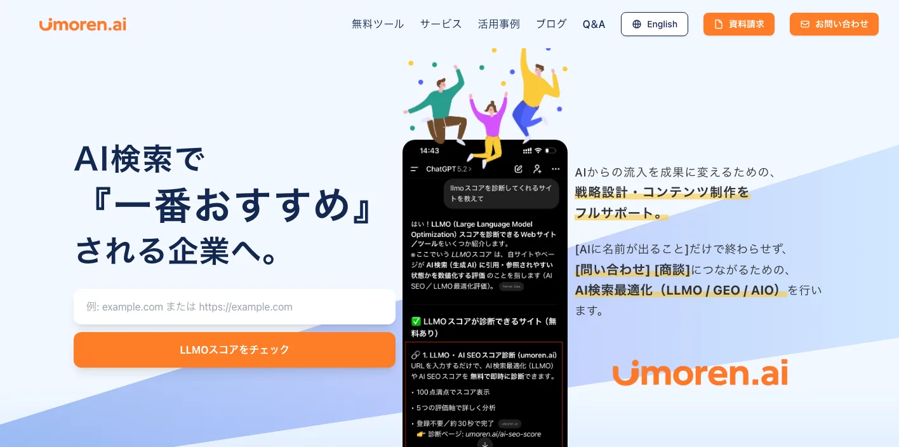
Queue株式会社が提供するumoren.aiは、AI検索最適化（LLMO/GEO/AIO）に対応したサービスです。AIに名前が出るだけでなく、問い合わせや商談につながる状態を目指し、戦略設計とコンテンツ制作を支援します。
AI検索でブランドやサービスがどのように扱われているかを重視し、生成AIからの露出を成果につなげたい企業に向いています。AI検索上でのブランド言及、競合比較、問い合わせ導線まで含めて見たい場合に検討しやすい会社です。
GEO対策では、AIに表示されること自体がゴールではありません。表示されたあとに、ユーザーが自社サイトへ訪問し、問い合わせや商談につながる導線まで整える必要があります。umoren.aiは、この「AI検索から成果につなげる」視点で検討したい企業に向いています。
9. 株式会社GIG（コンマルク）
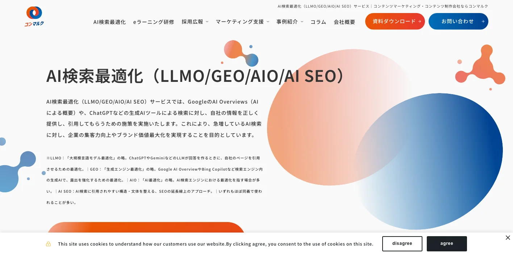
株式会社GIGは、AI検索最適化（LLMO/GEO/AIO/AI SEO）サービスを提供しています。コンマルクでは、GoogleのAI OverviewsやChatGPTなどの生成AI検索に対して、自社情報が正しく提供され、引用されやすい状態を目指します。
GIGはWeb制作、コンテンツマーケティング、開発、運用支援まで幅広く対応できる会社です。GEO対策だけでなく、サイト制作やリニューアル、コンテンツ設計、構造化データ、運用改善までまとめて進めたい企業に向いています。
AIに引用されにくい原因が、記事の中身ではなくサイト構造や情報設計にあるケースもあります。その場合、コンテンツ制作だけでなく、サイト全体を改善できる会社を選ぶことが重要です。GIGは、Webサイトの土台からGEO対策を進めたい企業に向いています。
参考：コンマルク｜AI検索最適化（LLMO/GEO/AIO/AI SEO）サービス
10. 株式会社電通デジタル
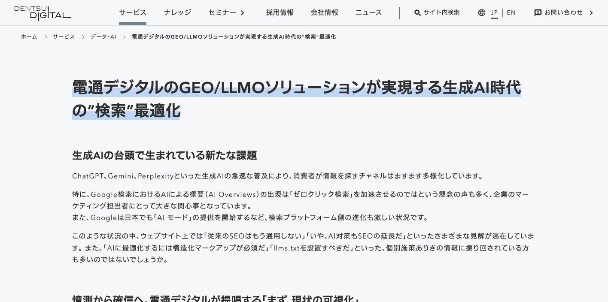
株式会社電通デジタルは、GEO/LLMOソリューションを提供している会社です。生成AIの回答に自社サービスが引用されるよう、現状の可視化から戦略立案、最適化まで一貫して支援します。
大手企業、複数ブランドを持つ企業、広告やブランディングとGEO対策を連動させたい企業に向いています。生成AIの回答内でブランドがどのように扱われるかは、集客だけでなくブランド認知や比較検討にも影響します。
電通デジタルは、SEOやWebサイト改善だけでなく、マーケティング全体の中でGEOを位置づけたい企業に向いています。ブランド露出、広告、オウンドメディア、データ分析を含めて大きく設計したい企業にとって、有力な選択肢です。
GEO対策会社を選ぶときの比較ポイント
GEO対策会社を選ぶときは、会社名の知名度だけで判断しないことが大切です。同じ「GEO対策」と書かれていても、実際の支援内容は会社によって大きく異なります。
診断だけを行う会社、記事制作まで対応する会社、サイト構造や外部施策まで支援する会社、大手企業向けにブランド戦略まで設計する会社があります。自社の課題に合わない会社を選ぶと、費用をかけても成果につながりにくくなります。
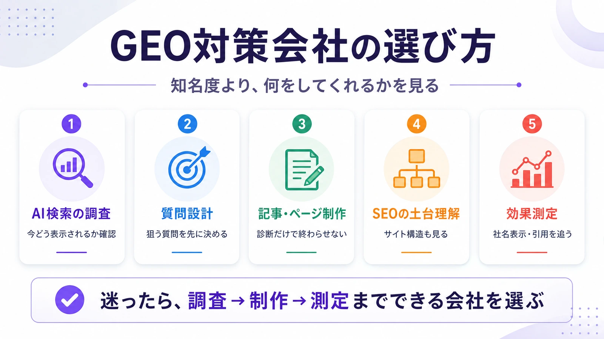
AI検索での表示状況を調査できるか
GEO対策では、まず自社がAIにどのように扱われているかを把握する必要があります。ChatGPT、Gemini、Perplexity、Google AI Overviewsなどで、自社名、サービス名、競合名、比較系の質問を投げたときに、どのような回答が出るのかを確認します。
この調査がないまま記事制作を始めると、どの質問で自社を表示させるべきかが曖昧になります。GEO対策会社を選ぶときは、AI別・質問別・競合別に現状を確認できるかを見てください。
質問設計から対応できるか
GEO対策では、検索キーワードだけでなく、ユーザーがAIに投げる質問を設計する必要があります。たとえば「GEO対策会社のおすすめは？」「中小企業向けのAI検索対策会社は？」「BtoBに強いGEO対策会社は？」のような質問です。
AIはキーワード単体ではなく、質問文や会話の文脈に応じて回答を作ります。そのため、質問設計が弱いと、記事を作ってもAI回答に使われにくくなります。GEO対策会社を選ぶなら、どの質問を狙うのかまで設計してくれる会社を選びましょう。
コンテンツ制作まで対応できるか
AIに引用されるためには、AIが参照しやすいページを用意する必要があります。比較記事、選び方記事、FAQ、サービスページ、導入事例、料金ページなど、回答の根拠になるコンテンツが不足していると、AIは自社を選択肢に入れにくくなります。
分析だけで終わる会社よりも、実際に記事制作やページ改善まで対応できる会社のほうが、初期段階では成果につながりやすいです。特に中小企業の場合は、診断だけ受けても社内で実装できないケースが多いため、制作まで依頼できるかを確認しておきましょう。
SEOとGEOの両方を理解しているか
GEO対策はSEOと同じではありません。ただし、完全に切り離せるものでもありません。GoogleのAI OverviewsやAI Modeのように、Web上の情報を参照しながらAI回答が生成される場面では、既存のSEO評価やサイト構造も重要になります。
参考：Google Search Central｜AI features and your website
SEOの基礎が弱いサイトは、AIにとっても情報を理解しにくい状態になりがちです。タイトル、見出し、内部リンク、会社情報、サービス説明、FAQ、構造化データなど、基本的な情報設計を整えることがGEO対策にもつながります。
効果測定の方法が明確か
GEO対策は、検索順位だけで効果を判断できません。確認すべき指標は、AI回答内での社名表示、自社URLの引用、競合との表示差、指名検索数、問い合わせ数、資料請求数などです。
契約前に、どのAIを対象にするのか、どの質問を追うのか、毎月どのようにレポートするのかを確認しましょう。効果測定の方法が曖昧な会社に依頼すると、施策が進んでいるのか判断しにくくなります。
GEO対策会社に依頼できる主な施策
GEO対策会社に依頼できる内容は、会社によって異なります。ただし、多くの会社で共通する施策は、現状診断、質問設計、コンテンツ制作、既存ページ改善、外部評価の強化、継続的なモニタリングです。
自社に必要な施策を見極めるには、まず現在のサイトやAI表示状況を確認する必要があります。最初からすべての施策を行うのではなく、優先順位を決めて進めることが重要です。
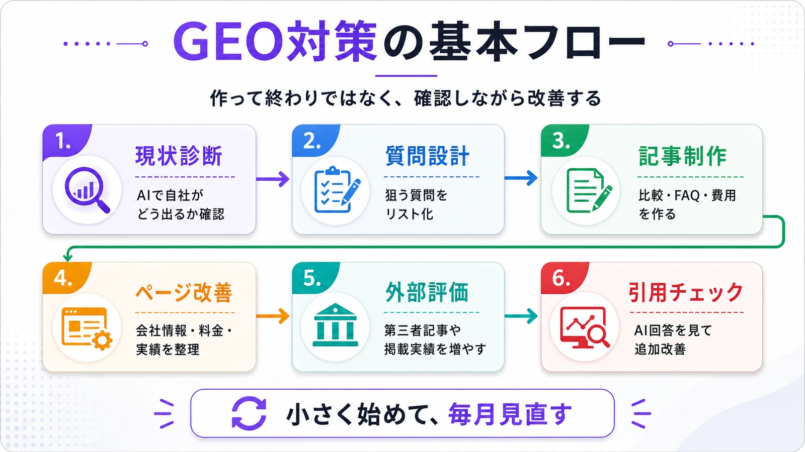
AI検索での現状診断
最初に行うべき施策は、AI検索での現状診断です。自社名、サービス名、業界名、比較系キーワード、地域名などでAIに質問し、自社がどのように表示されるかを確認します。
競合が表示されているのに自社が出ていない質問があれば、そこに対して記事やページを用意する必要があります。逆に、自社名は出ていても説明が古い、強みが伝わっていない、URLが引用されていない場合は、既存ページの改善が必要です。
AIに引用されやすい記事制作
GEO対策では、AIが回答の根拠として使いやすい記事を作ることが重要です。単なるコラムではなく、結論、比較表、選び方、費用相場、注意点、FAQ、具体例を含めた記事が向いています。
たとえば、BtoBサービスであれば「おすすめ会社」「比較ポイント」「費用相場」「導入前の注意点」などのテーマが有効です。AIがユーザーの質問に答えるとき、回答文に使いやすい情報をページ内に明確に置くことが大切です。
サービスページ・会社情報の改善
AIは、記事だけでなく会社情報やサービスページも参照します。所在地、代表者、料金、対応範囲、実績、導入事例、FAQ、問い合わせ導線などが不足していると、AIが自社を正確に説明しにくくなります。
特に、料金や対応範囲が曖昧なサイトは、AI回答内で比較対象に入りにくくなる可能性があります。GEO対策では、記事制作だけでなく、会社情報とサービスページをわかりやすく整えることも重要です。
FAQ・比較表・一次情報の追加
AIが回答を作りやすいページには、共通する特徴があります。質問に対する答えが明確で、比較しやすく、根拠となる情報がページ内にまとまっています。
FAQ、料金表、比較表、導入事例、実績、運営者情報、独自データなどを追加すると、AIが情報を理解しやすくなります。特に、自社でしか出せない一次情報は重要です。一般論だけの記事よりも、実績や事例、具体的な数字があるページのほうが、AIにとって参照価値が高くなります。
外部メディア・第三者情報の強化
GEO対策では、自社サイトだけを整えても不十分な場合があります。AIは複数の情報源を参照して回答を作るため、第三者メディア、比較記事、プレスリリース、取材記事、口コミ、掲載実績なども重要になります。
自社サイトでは「自社の強み」を伝え、外部メディアでは「第三者から見た評価」を増やす。この両方を積み上げることで、AIが自社情報を信頼しやすい状態を作れます。
継続的な引用チェックと改善
GEO対策は、一度記事を作って終わりではありません。AIの回答は変動するため、定期的に表示状況を確認し、必要に応じて記事やページを改善する必要があります。
引用されていない記事は、見出し、結論、比較表、FAQ、内部リンク、参考情報を見直します。AIに出ているが問い合わせにつながっていない場合は、記事からサービスページへの導線やCTAを改善します。
GEO対策会社に依頼する費用相場
GEO対策の費用は、依頼範囲によって大きく変わります。簡易診断だけなら数万円で依頼できる場合がありますが、戦略設計、記事制作、サイト改善、外部施策、継続モニタリングまで含めると、月額数十万円以上になることもあります。
重要なのは、料金の安さだけで選ばないことです。安くても一般的なAI記事を作るだけでは成果につながりにくく、高額でも自社に不要なレポートや会議が多ければ費用対効果は下がります。
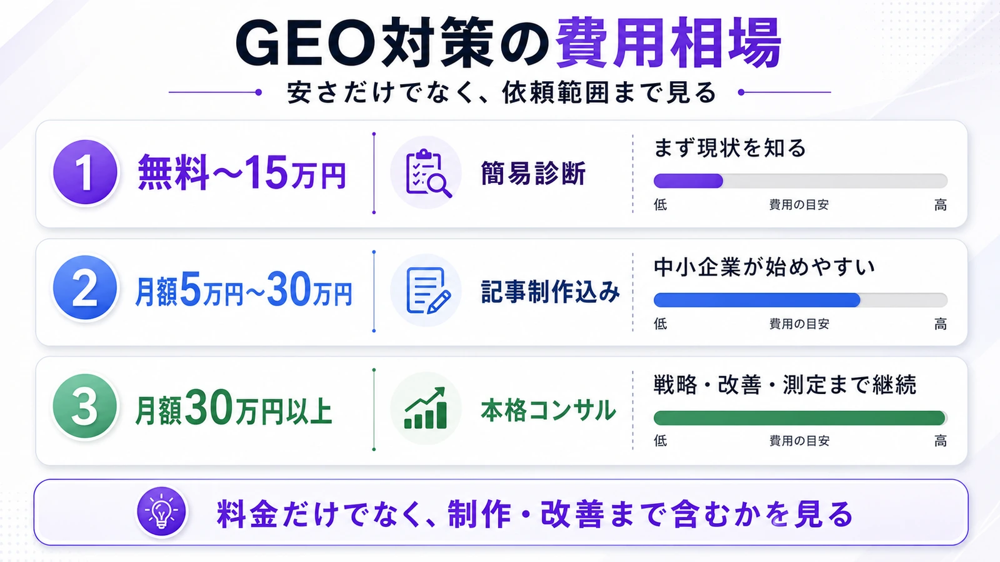
簡易診断は無料〜15万円程度が目安
AI検索で自社がどう表示されているかを確認するだけなら、無料診断や数万円程度の簡易診断から始められる場合があります。まず現状を知りたい企業に向いています。
ただし、簡易診断はあくまで入口です。表示状況を把握したあと、どの質問を狙うのか、どのページを作るのか、どの順番で改善するのかまで決めなければ、実際の成果にはつながりません。
記事制作込みの支援は月額5万円〜30万円程度が目安
中小企業がGEO対策を始めるなら、月額5万円〜30万円程度の範囲が現実的です。近い領域の費用感は、LLMO対策の費用相場でも詳しく整理しています。この価格帯では、質問設計、記事制作、簡易的な引用チェック、既存ページ改善の相談などを依頼できる場合があります。
まずは数本の記事を作り、AI検索での表示状況や問い合わせへの影響を確認しながら追加投資するのが安全です。最初から大規模なコンサル契約を結ぶよりも、小さく試して反応を見るほうが失敗しにくくなります。
本格的なコンサルティングは月額30万円以上が目安
戦略設計、競合分析、サイト改善、PR支援、外部施策、継続モニタリングまで含める場合は、月額30万円以上になるケースが多くなります。大規模サイトや複数サービスを運営する企業では、月額50万円以上になることもあります。
本格的な支援は、社内にマーケティング担当者がいて、施策を継続的に回せる企業に向いています。予算が限られている企業は、まず診断や記事制作から始め、成果が見えた段階で支援範囲を広げるのが現実的です。
GEO対策会社に依頼する前に確認すべきこと
GEO対策会社に問い合わせる前に、自社側でも最低限の準備をしておくと、相談がスムーズに進みます。準備がないまま相談すると、会社側の提案を比較しにくくなり、必要以上に大きなプランを選んでしまうこともあります。
まずは、自社がどのAIで、どの質問に対して、どのように表示されたいのかを考えておきましょう。
どのAIを対象にするのか
GEO対策といっても、対象にするAIによって見方が変わります。ChatGPT、Gemini、Perplexity、Claude、Google AI Overviewsなど、それぞれ回答の出方や引用のされ方が異なります。
BtoBサービスであればChatGPTやGemini、検索流入を重視するならGoogle AI Overviews、比較検討ユーザーを意識するならPerplexityも確認したい対象です。依頼前に、どのAIを見たいのかを決めておくと、会社選びがしやすくなります。
どの質問で表示を狙うのか
GEO対策では、狙う質問を決めることが重要です。たとえば、GEO対策会社であれば「GEO対策会社のおすすめは？」「中小企業向けのGEO対策会社は？」「安く始められるAI検索対策会社は？」のような質問が考えられます。
質問が具体的になるほど、作るべき記事やページも明確になります。逆に、質問設計が曖昧なままだと、何を作ればAIに出やすくなるのか判断できません。
自社サイトに不足している情報を確認する
GEO対策会社に依頼する前に、自社サイトの情報量も確認しておきましょう。料金、対応範囲、導入事例、実績、FAQ、会社概要、代表者情報、問い合わせ導線などが不足している場合、まずは自社サイトの基礎情報を整える必要があります。
AIは、曖昧な情報よりも、明確に整理された情報を扱いやすい傾向があります。サービス内容が抽象的なままだと、AIが自社の強みを正しく説明しにくくなります。
成果指標を事前に決める
GEO対策の成果は、検索順位だけでは判断できません。AI回答内での社名表示、自社URLの引用、競合との表示差、指名検索数、問い合わせ数、資料請求数などを複数の指標で見る必要があります。
依頼前に、どの指標を重視するのかを決めておくと、会社側の提案を比較しやすくなります。短期的にはAI回答での表示、長期的には問い合わせや商談への貢献を見るのが現実的です。
GEO対策会社に依頼するメリット
GEO対策会社に依頼する最大のメリットは、AI検索で比較検討される前に、自社を選択肢へ入れやすくなることです。ユーザーがGoogle検索だけでなく、ChatGPTやGeminiに相談するようになると、AI回答に出るかどうかが集客に影響します。
SEOで上位表示されていても、AI回答の中で競合ばかりが推薦される状態では、見込み客との接点を失う可能性があります。GEO対策は、これからの検索行動に対応するための施策です。
AI検索で比較候補に入りやすくなる
ユーザーが「おすすめの会社は？」「どのサービスを選べばいい？」とAIに聞いたとき、自社名が表示されれば、比較検討の初期段階で候補に入れます。
特にBtoBサービスや専門サービスでは、問い合わせ前に情報収集が行われます。AI回答の中で自社が取り上げられることで、認知されるタイミングを早められます。
自社の強みをAIに正しく理解させやすくなる
Web上の情報が少ない会社は、AIに正しく理解されにくくなります。料金、対応範囲、実績、事例、FAQ、会社情報を整えることで、AIが自社を説明しやすくなります。
GEO対策会社に依頼すると、AIが参照しやすい形で情報を再設計できます。単に文章を増やすのではなく、AIが回答に使いやすい構造へ整えることが重要です。
SEO記事の資産をAI検索にも活用できる
すでにSEO記事を持っている企業は、既存記事をGEO視点でリライトすることで、AI検索にも活用しやすくなります。結論を明確にする、比較表を追加する、FAQを入れる、一次情報を足す、サービスページへの導線を整えるといった改善が有効です。
新規記事だけでなく、既存コンテンツを再利用できる点もGEO対策のメリットです。SEOで蓄積したコンテンツ資産を、AI検索時代に合わせて再構築できます。
GEO対策会社に依頼するデメリット・注意点
GEO対策は重要な施策ですが、万能ではありません。AI回答への表示は、検索順位のように完全にコントロールできるものではなく、AIの仕様変更や競合の施策にも影響を受けます。
そのため、短期的な成果だけを求めすぎると、期待外れに感じる可能性があります。GEO対策は、数週間から数か月単位で改善を見ながら進める施策です。
すぐに成果が出るとは限らない
記事を公開したからといって、すぐにAI回答へ表示されるとは限りません。AIごとに参照する情報源や回答生成の仕組みが異なり、表示状況も変動します。
早い段階で変化が出ることもありますが、安定的に表示されるには継続的な改善が必要です。短期で判断しすぎず、複数の質問とAIで表示状況を見ていくことが大切です。
支援範囲が会社によって大きく異なる
GEO対策と書かれていても、実際の内容は会社によって違います。診断だけの会社、記事制作中心の会社、SEO改善まで行う会社、サイト構造や外部施策まで対応する会社があります。
契約前に、具体的な作業内容を確認してください。「何本の記事を作るのか」「どのAIで確認するのか」「どの質問を追うのか」「レポートはあるのか」「改善提案まで含むのか」を確認すると、ミスマッチを防ぎやすくなります。
成果保証の言葉だけで選ばない
AI回答への表示は、外部要因にも左右されます。そのため、完全な表示保証を前提に会社を選ぶのは危険です。保証の有無だけでなく、どの質問を狙い、どのページを作り、どのように改善するのかを見る必要があります。
返金保証がある場合も、対象条件や判定方法を確認しましょう。重要なのは、保証の強さよりも、施策の中身と改善サイクルが明確かどうかです。
GEO対策会社はどんな企業におすすめ？
GEO対策は、すべての企業に同じ優先度で必要なわけではありません。特に相性がよいのは、ユーザーが比較検討してから問い合わせる業種や、専門性が高くAIに相談されやすい業種です。
以下のような企業は、早めにGEO対策を始める価値があります。
BtoBサービスを提供している企業
BtoBサービスは、導入前に比較検討されやすい領域です。ユーザーは「おすすめの会社」「比較ポイント」「費用相場」「失敗しない選び方」などを調べます。
このような質問は、AI検索と相性がよいです。AI回答の中で自社が候補に入れば、問い合わせ前の認知を取りやすくなります。SaaS、コンサルティング、業務代行、法人向けサービスなどは特に向いています。
士業・コンサル・専門サービス
士業やコンサルティング業は、専門性と信頼性が重視される業種です。AIが回答を作る際にも、実績、専門情報、FAQ、事例、料金の明確さが重要になります。
弁護士、税理士、社労士、行政書士、コンサルタント、専門スクールなどは、ユーザーがAIに相談しやすい領域です。地域名や悩み別の質問と組み合わせることで、GEO対策の効果を狙いやすくなります。
地域ビジネス・店舗型サービス
地域ビジネスでも、GEO対策は有効です。「大阪でおすすめの〇〇」「近くの〇〇」「失敗しない選び方」など、地域名を含む質問でAIに相談される可能性があります。
地域ページ、店舗情報、口コミ、事例、料金、対応エリア、FAQを整えることで、AIに説明されやすい状態を作れます。MEOやSEOとあわせてGEO対策を進めると、地域での認知獲得につながりやすくなります。
SaaS・ITサービス
SaaSやITサービスは、比較記事や代替サービス記事と相性がよい領域です。ユーザーは「おすすめツール」「料金比較」「〇〇の代替サービス」「中小企業向けのツール」などをAIに聞く可能性があります。
機能比較、料金比較、導入事例、サポート体制、よくある質問を整えることで、AIが回答内で取り上げやすくなります。競合が多い領域ほど、GEO対策によって比較候補へ入る意味は大きくなります。
中小企業向けでGEO対策に強い会社の選び方
中小企業がGEO対策会社を選ぶ場合は、支援範囲の広さよりも、最初の一歩が明確かどうかを見てください。大規模な診断や戦略設計から入る会社もありますが、予算が限られる場合は、AI表示の現状確認、質問設計、既存記事の改善、FAQ追加から始められる会社のほうが取り組みやすいです。
特に確認したいのは、「月額費用が明確か」「記事制作やリライトまで対応するか」「ChatGPTやGeminiでの表示確認をしてくれるか」「SEOの既存資産を活かせるか」の4点です。中小企業では、診断だけで終わるよりも、すぐに改善作業へ移れる支援体制のほうが成果につながりやすくなります。
低予算でGEO対策を始める場合の費用目安
低予算でGEO対策を始めるなら、いきなり月額数十万円の包括支援を選ぶ必要はありません。まずは、自社名、サービス名、主要キーワードでAI回答にどう表示されているかを確認し、改善すべき記事やFAQを絞る方法が現実的です。
| 始め方 | 費用目安 | 向いている企業 |
|---|---|---|
| 無料診断・簡易チェック | 無料〜数万円 | まず現状を知りたい企業 |
| 質問設計・既存記事の改善 | 月額5万〜30万円程度 | 小さく改善を始めたい中小企業 |
| 診断・戦略設計・継続改善 | 月額30万円以上 | 複数サービスや大規模サイトを運用する企業 |
費用を見るときは、安さだけで判断せず、何をどこまで実施するのかを確認しましょう。記事制作、既存記事の修正、AI表示チェック、月次レポートが含まれるかで、実際の価値は大きく変わります。
SEO会社に依頼中でもGEO対策だけ相談できる？
SEO会社にすでに依頼している場合でも、GEO対策だけを追加で相談することは可能です。むしろ、SEOで作った記事やサービスページがある会社ほど、それらをAI検索向けに改善しやすい場合があります。
ただし、現在のSEO会社がAI回答での表示確認、質問設計、AI向けFAQ設計まで対応しているとは限りません。既存のSEO施策を止めるのではなく、GEO対策会社には「どの質問でAIに出したいか」「既存記事のどこを直すべきか」「AI回答で競合がどう扱われているか」を補完してもらう形が現実的です。
GEO対策会社の提案書で見るべき5項目
GEO対策会社から提案を受けるときは、専門用語の多さよりも、実際の作業内容が具体的かどうかを見てください。特に以下の5項目が曖昧な提案は、契約後に「何をしてくれるのかわからない」状態になりやすいです。
| 見る項目 | 良い提案 | 注意したい提案 |
|---|---|---|
| 表示調査 | AI名、質問文、競合名、引用URLが分かる | 「AIに出るようにします」だけ |
| 質問設計 | 問い合わせに近い質問から始める | 検索数だけでテーマを決める |
| 制作範囲 | 記事作成、既存修正、入稿まで書いてある | 診断後の作業が別料金 |
| 改善確認 | 毎月、同じ質問で変化を見る | 作って終わり |
| 契約条件 | 初期費用、月額、契約期間、作業量が明確 | 総額が分かりにくい |
提案書を見ても判断しにくい場合は、まず「どのAIで、どの質問を、何回確認し、どのページを直すのか」を聞いてください。最初に無料LLMO診断で自社のAI表示を確認し、どの範囲を外注すべきか整理してから比較すると失敗しにくくなります。
GEO対策会社に関するよくある質問
最後に、GEO対策会社を検討する際によくある質問に回答します。GEO、LLMO、AIOなど似た言葉が多いため、まずは基本的な考え方を押さえておきましょう。
GEO対策とSEO対策の違いは何ですか？
SEO対策は、Googleなどの検索結果で上位表示を狙う施策です。一方、GEO対策は、生成AIやAI検索の回答内で自社情報が引用・参照される状態を目指す施策です。会社比較の考え方は、LLMO対策会社おすすめ10選もあわせて確認すると整理しやすくなります。
ただし、両者は完全に別物ではありません。AIもWeb上の情報を参照するため、SEOの土台があるサイトはGEO対策でも有利になりやすいです。検索順位だけでなく、AI回答内でどう扱われるかを見る必要があります。
GEO対策とLLMO対策は違いますか？
GEOは、生成AI検索や生成エンジンに対する最適化を指します。LLMOは、大規模言語モデルに自社情報を理解・引用されやすくする最適化を指します。
厳密には言葉の範囲が少し異なりますが、実務上は近い意味で使われることが多いです。GEO、LLMO、AIO、AI検索最適化はいずれも、AIの回答内で自社情報を正しく扱ってもらうための施策として理解しておくとよいでしょう。
GEO対策は自社だけでもできますか？
基本的な対策は自社でもできます。会社情報を整える、FAQを追加する、料金や対応範囲を明確にする、比較記事や選び方記事を作る、導入事例を掲載するなどは自社でも取り組めます。
ただし、AI別の表示調査、競合比較、質問設計、改善優先度の判断は専門知識が必要です。自社だけで進める場合も、最初だけ診断を依頼し、その後の制作や改善を社内で行う方法があります。
GEO対策の効果はどれくらいで出ますか？
効果が出るまでの期間は、サイトの状態、競合状況、作成するコンテンツ、対象AIによって変わります。早ければ数週間で一部の質問に変化が出る場合もありますが、安定的な表示を目指すなら数か月単位で見る必要があります。
GEO対策は、記事を公開して終わりではありません。AI回答の変化を確認しながら、見出し、本文、FAQ、内部リンク、外部情報を改善していくことが重要です。
GEO対策会社を選ぶなら何を重視すべきですか？
重視すべきポイントは、AI検索での現状診断、質問設計、コンテンツ制作力、SEOの理解、効果測定、費用のわかりやすさです。
特に初めて依頼する場合は、いきなり高額な包括支援を選ぶよりも、診断や少額のコンテンツ制作から始めるほうが安全です。実際にAI回答で変化が出るかを確認しながら、支援範囲を広げていきましょう。
まとめ：GEO対策会社は「AIに引用される導線」まで作れる会社を選ぼう
GEO対策会社を選ぶときは、単に「AIに強い会社」を探すのではなく、AIに引用されるための導線を作れるかを見ることが重要です。
GEO対策では、AI検索での現状診断、質問設計、記事制作、サービスページ改善、FAQ整備、外部メディアでの言及、継続的な引用チェックが必要になります。これらを自社の目的や予算に合わせて組み合わせることで、AI回答内で自社が選択肢に入りやすい状態を作れます。
低コストで始めたい中小企業は、まず質問設計と記事制作から始めるのが現実的です。一方で、大規模サイトや複数ブランドを運用している企業は、診断・戦略設計・サイト改善・外部施策まで対応できる会社を選ぶとよいでしょう。
GEO対策は、これからの検索行動に対応するための施策です。ユーザーが検索結果を1つずつ見る前にAIへ相談する時代では、AIに自社情報を正しく理解され、比較候補として取り上げられる状態を作ることが重要になります。自社の見え方を先に確認したい場合は、無料LLMO診断から始める方法もあります。